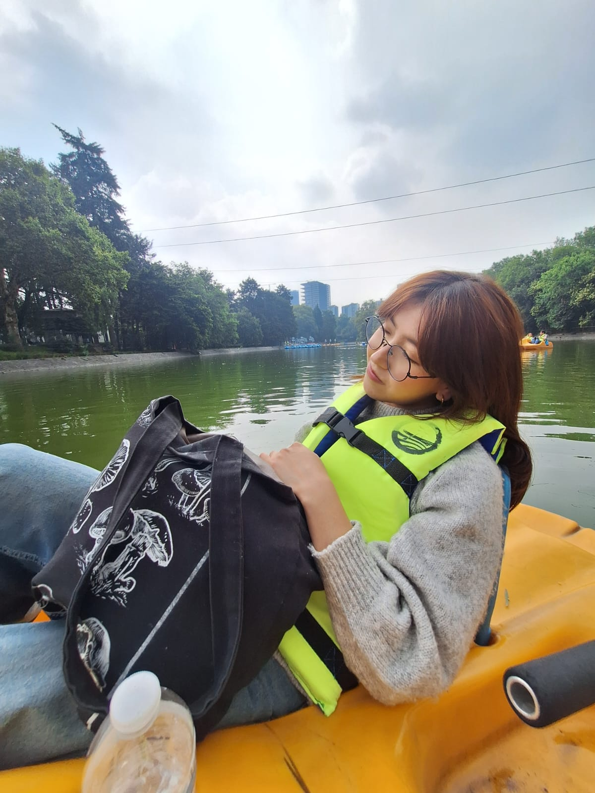
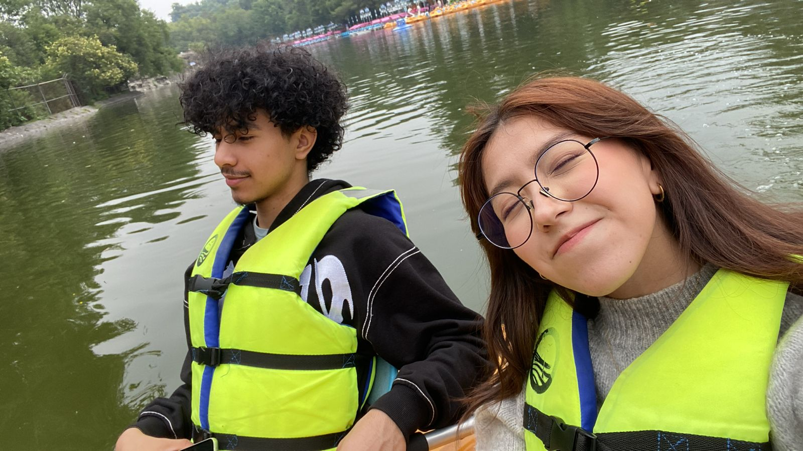
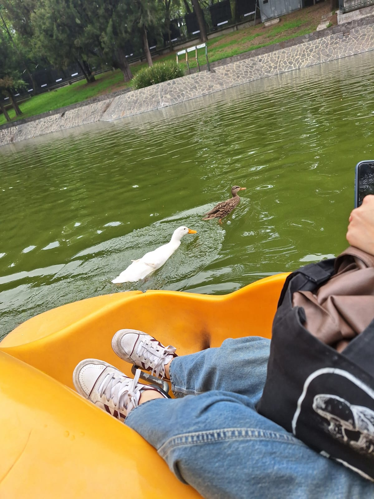

Linda posando
AYYYYY que linda te ves en esta foto, me genera como paz verla, verte a ti, relajada, el fondo, todo es como tan relajado

Selfiee
Nos vemos suuuuper bien y neniiii ahora que lo pienso, nunca subí esta foto a ig y me gusta mucho jaja, probablemente para cuando veas esta página, ya la habré subido porque ahora que la veo, no puede faltar en ig jiji

Patoooos
jajaja ayy recuerdo como nos acercábamos a todo lo que veiamos, recuerdo como estos patos vinieron a nosotros más tiempo que con otros que estaban al frente, nos quisieron más
Comiendoooo
Recuerdo muy bien como llegamos después de un buen rato viendo como llegar a esa zona con los metrobus, la lluvia, el como no me dejaste subir al segundo piso de los metrobus, el ratote que estuvimos debajo del puesto de una señora cubriéndonos, y cuando llegamos nos quitamos, comimos muy ricooo y cada vez que suena la canción de fondo, me recuerda a este momento porque estaba sonando (de hecho en lo que hago esta página de este día, la tengo en repetición para entrar al recuerdo bien)
Que lindaaaaa, sales super tierna en esta foto, ya por último de este día, salimos, y nos tomamos unas cuantas fotos, ya estaba empezando a anochecer, y vimos ese edificio y nos tomamos bastantes fotos, las mías son mas cerca y alguuun dia que tenga muchas fotos asi de buenas haré post jiji, en serio que fue un día increíble